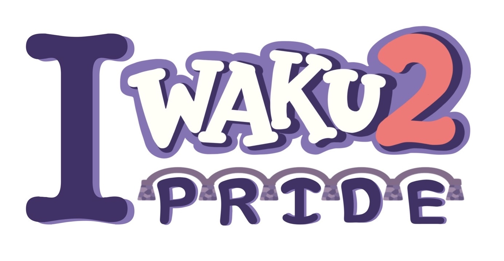

SCIENCE LAB / PHYSICS
オシロスコープ
音の波形を観察しよう ｜ 中学１年 理科
● シミュレーション
01 / WAVEFORM
波形を見てみよう
← 時間振幅 ↑↓
振動数440 Hz
振幅50 %
音の高さラ
音の大きさ標準
02 / EXPERIMENT
音を変えて比べよう
低い音高い音
小さい音大きい音
振動数が大きいほど高い音、振幅が大きいほど大きな音になります。音量は端末側の音量にも左右されます。
03 / MICROPHONE
マイクで音を観察しよう
声を出したり手をたたいたりして、音の波形を見てみましょう。
入力レベル0 %
音の振動数の目安-- Hz
マイクはHTTPS接続で利用できます。開始ボタンを押すと許可を求めます。
04 / RECORD
録音して聞き比べよう
録音にはマイクの許可が必要です。録音データはこのページ内で処理されます。
授業のポイント：音の高低は振動数、音の大小は振幅と関係します。音量に注意して使いましょう。マイク入力・録音はブラウザーの許可が必要です。